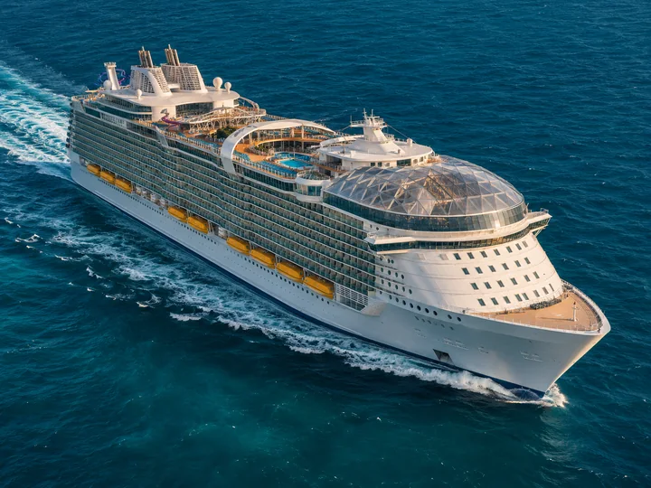
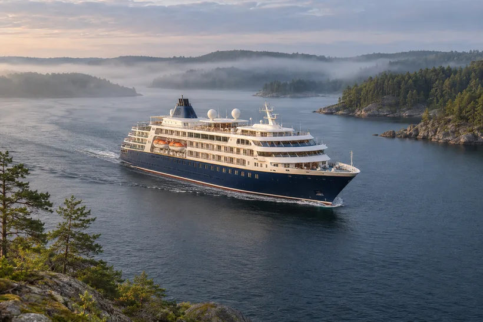

Przewodnik po pokładach
Wonder of the Seas
Sprawdź, jak dojść do kasyna, teatru czy ścianki wspinaczkowej na pokładach 4–7.
Otwórz mapę Wonder of the SeasPrzewodnik pasażera
Znajdź drogę na statku i odkryj, co dzieje się na pokładzie. Zaplanuj dzień na morzu po swojemu.
Wybierz kierunek
Zwiedź Wonder of the Seas albo otwórz demo życia na pokładzie MV Horizon.

Przewodnik po pokładach
Sprawdź, jak dojść do kasyna, teatru czy ścianki wspinaczkowej na pokładach 4–7.
Otwórz mapę Wonder of the Seas
Rejs demonstracyjny
Ułóż plan dnia, poznaj innych pasażerów i odkryj restauracje na pokładzie.
Odkryj MV HorizonNa pokładzie
Wybierz cel na mapie. Zobacz, którędy przejść i na którym pokładzie wysiąść.
Mapa statkuSprawdź program rejsu i wybierz wydarzenia, na które masz ochotę.
Kalendarz rejsuUmów się na wspólną kawę, trening albo wieczorną grę.
Poznaj ludziPrzejrzyj menu, opinie i rezerwacje stolików.
RestauracjeW katalogu projektu uruchom node server.mjs, a następnie otwórz lokalny adres aplikacji.
Powiadomienia